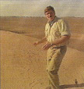

Monday January 22
Series Debut
7:30-8AM
The Book of Pooh (Disney Channel, TV-Y) It's never too early to start those preschoolers out with a daily dose of Tigger.8-10PM
The Pretender 2001 (TNT, TV-14-V) For those of you who miss the former NBC series—you're out there, right?—here's a two-hour movie update.9-10PM
100 Centre Street (A&E, TV-14-DL) A man robs a convienence store and is then shocked to discover his partner has a gun.9-10PM
Ally McBeal (Fox, TV-14-DL) Chubby Checker judges a twist contest, which sadly is probably what he's been doing in real life for the past 30 years.10-11PM
Gideon's Crossing (ABC, TV-14-DV) It would appear someone may be performing a littlebad medicine,when a suicide victim posthumously points to one of the doctors for sexual misconduct.

9-11PM
What Makes a Family
(Lifetime, TV-14-D) Brooke Shields is suddenly suin' when the state of Florida denies her custody of the young daughter she had with her late longtime female companion (Cradle Will Rock's Cherry Jones, right with Shields). She hires a civil rights attorney played by Whoopi Goldberg (who exec-produced the film along with Barbra Streisand and others). Shields surprises with a supple performance, but Family remains a standard-issue TV-for-women movie. B- —Bruce Fretts
Tuesday January 23
8-9PM
The Mole (ABC, TV-PG) Where else might you witness such provocative exchanges likeYou're the mole, aren't you?
No, you are. You're the mole.
I could be, but I think it's you…or that other guy.
Yeah, maybe that other guy is the mole.
8-9PM
Buffy the Vampire Slayer (The WB, TV-14-DLV) The Watcher Council has some info on that big pest Glory, but will share it only if Buffy can prove her mettle as a Slayer.9:30-10PM
The Geena Davis Show (ABC, TV-PG-DL) Max and Hillary confess they don't like each other. That's okay—viewers don't like them either!10-11PM
NYPD Blue (ABC, TV-14-L) It's a new naked-butt subject just waiting to happen when Garcelle Beauvais joins the cast as an assistant DA.
8-9PM
Ultimate Survival Guide
(Travel Channel, TV-G)Stay calm, keep your mouth shut, and roll your sleeves down.Sound advice for any situation, but especially when stuck in the desert. In this fun and informative edition, host Ray Mears (left) goes into the Sahara to show what it takes to survive both wicked sun and sand.
I feel like Obi-Wan Kenobi,Mears exclaims while sitting solitarily by campfire in a hooded garment. Yeah, but doesn't he, like, die? B+